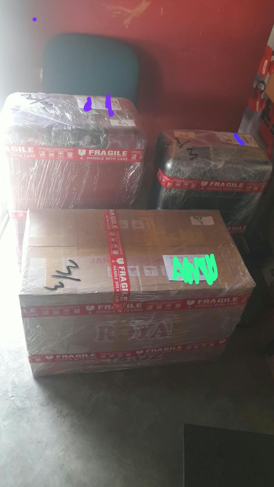

Cara Packing Paket yang Benar agar Barang Aman Selama Pengiriman

Mengirim barang ke luar kota maupun ke luar pulau membutuhkan persiapan yang baik, terutama dalam hal pengemasan. Paket akan melewati berbagai proses penanganan, mulai dari penerimaan, penyortiran, pemindahan kendaraan, hingga pengantaran ke alamat penerima. Karena itu, cara packing paket yang benar menjadi salah satu faktor penting untuk membantu menjaga barang tetap aman selama perjalanan.
Packing bukan sekadar memasukkan barang ke dalam kardus lalu menutupnya dengan lakban. Pemilihan bahan kemasan, ukuran kardus, pelindung barang, serta cara menutup paket perlu disesuaikan dengan jenis barang yang dikirim. Dengan pengemasan yang tepat, risiko barang bergeser, tergores, penyok, atau mengalami kerusakan dapat dikurangi.
Butuh Informasi Pengiriman Paket?
Bingung memilih kemasan atau ingin bertanya mengenai pengiriman barang? Hubungi Lion Parcel Bandung POS101 untuk mendapatkan informasi sebelum mengirim paket.
💬 Chat WhatsApp 0851-8309-04861. Pilih Kardus atau Kemasan yang Sesuai dengan Barang
Langkah pertama dalam packing paket adalah memilih kemasan yang sesuai dengan bentuk, ukuran, berat, dan karakteristik barang. Jangan menggunakan kardus yang terlalu tipis atau sudah rusak, terutama jika barang di dalamnya memiliki bobot cukup berat.
Kardus yang baik seharusnya masih kokoh, tidak lembap, tidak sobek, dan mampu mempertahankan bentuk ketika digunakan untuk mengemas barang. Jika barang memiliki ukuran kecil, sebaiknya gunakan kemasan yang tidak terlalu besar agar barang tidak mudah bergerak di dalamnya.
- Barang ringan: Gunakan kemasan yang cukup kuat dan sesuai dengan ukuran barang.
- Barang berat: Pilih kardus tebal dan kuat dengan bagian bawah yang diperkuat.
- Barang berbentuk tidak beraturan: Gunakan lapisan pelindung tambahan sebelum memasukkan barang ke kardus.
- Barang sensitif: Pastikan kemasan memiliki ruang untuk pelindung benturan di bagian sisi, atas, dan bawah.
📍 Lokasi Lion Parcel Bandung POS101 Nanjungmekar
Jl. Raya Barat Cicalengka RT 1 RW 1, Nanjung Mekar, Rancaekek, Kabupaten Bandung, Jawa Barat.
2. Gunakan Bubble Wrap untuk Melindungi Barang
Bubble wrap merupakan salah satu bahan pelindung yang banyak digunakan untuk mengemas barang agar tidak mudah terkena benturan. Lapisan gelembung udara di dalamnya membantu memberikan perlindungan tambahan ketika barang mengalami guncangan selama proses pengiriman.
Bungkus barang menggunakan bubble wrap beberapa lapis sesuai kebutuhan. Untuk barang yang mudah tergores atau memiliki bagian sensitif, pastikan seluruh permukaan terlindungi dengan baik. Gunakan lakban untuk menjaga bubble wrap tetap pada posisinya dan tidak terbuka saat barang dimasukkan ke kardus.
- Pastikan semua bagian barang tertutup oleh lapisan pelindung.
- Berikan perlindungan ekstra pada sudut atau bagian yang mudah rusak.
- Hindari membungkus terlalu longgar karena pelindung dapat bergeser.
- Jika barang terdiri dari beberapa bagian, bungkus setiap bagian secara terpisah agar tidak saling berbenturan.
3. Isi Ruang Kosong di Dalam Kardus
Salah satu kesalahan packing yang sering terjadi adalah membiarkan ruang kosong terlalu banyak di dalam kardus. Kondisi ini dapat membuat barang bergerak bebas ketika paket dipindahkan atau mengalami guncangan.
Setelah barang dimasukkan ke dalam kardus, periksa bagian samping, atas, dan bawah. Jika masih terdapat ruang kosong, tambahkan bahan pengisi seperti kertas kraft, potongan karton, foam, atau bahan pelindung lain yang sesuai.
Tujuannya adalah menjaga barang tetap berada pada posisinya. Namun, jangan mengisi kardus secara berlebihan hingga kemasan menjadi menggembung atau sulit ditutup dengan sempurna.
4. Pisahkan Barang agar Tidak Saling Berbenturan
Jika mengirim beberapa barang sekaligus dalam satu paket, pastikan masing-masing barang memiliki perlindungan yang cukup. Barang yang memiliki permukaan keras sebaiknya tidak dibiarkan bersentuhan langsung dengan barang lain yang mudah tergores, pecah, atau penyok.
Gunakan pembatas dari karton, foam, atau bahan pelindung lain untuk memisahkan barang di dalam kemasan. Cara ini sangat berguna untuk paket yang berisi beberapa produk, perlengkapan rumah tangga, aksesoris, atau barang dagangan.
- Pisahkan barang yang memiliki sudut tajam.
- Jangan mencampur barang berat dengan barang ringan tanpa pembatas.
- Gunakan lapisan pelindung di antara barang yang mudah tergores.
- Pastikan susunan barang tidak berubah ketika kardus digerakkan.
5. Perkuat Bagian Bawah dan Sisi Kardus
Bagian bawah kardus merupakan area yang menahan beban barang selama paket diangkat dan dipindahkan. Oleh sebab itu, bagian ini perlu ditutup dengan lakban secara kuat, terutama apabila isi paket cukup berat.
Gunakan lakban yang sesuai dengan jenis dan berat kemasan. Tutup sambungan kardus dengan rapi, termasuk bagian tengah dan sisi-sisi yang berpotensi terbuka. Apabila dibutuhkan, tambahkan lapisan lakban pada bagian bawah untuk memperkuat kemasan.
Hindari hanya menempelkan lakban tipis pada satu garis sambungan jika kardus membawa barang yang cukup berat. Pastikan semua lipatan kardus tertutup dengan baik sebelum paket dikirim.
6. Tutup Paket dengan Rapi dan Pastikan Tidak Mudah Terbuka
Setelah seluruh barang dan bahan pelindung dimasukkan, tutup kardus secara sempurna. Pastikan tidak ada bagian yang menganga, lipatan terbuka, atau sisi kardus yang mudah terlepas.
Kemasan yang rapi akan membantu proses penanganan paket. Selain itu, kardus yang tertutup dengan baik dapat mengurangi risiko isi paket keluar akibat kemasan terbuka selama perjalanan.
Sebelum menempelkan label pengiriman, periksa kembali seluruh sisi paket. Jika kardus terasa tidak kokoh, sebaiknya perbaiki kemasan terlebih dahulu.
7. Tulis Informasi Penerima dengan Jelas
Setelah paket selesai dikemas, pastikan informasi pengiriman tercantum dengan benar. Data penerima yang jelas membantu proses pengantaran dan memudahkan petugas apabila diperlukan pengecekan alamat.
Informasi yang sebaiknya dipastikan meliputi:
- Nama lengkap penerima.
- Nomor telepon penerima yang aktif.
- Alamat lengkap, termasuk nama jalan, nomor rumah, RT/RW bila diperlukan.
- Kelurahan, kecamatan, kota atau kabupaten, serta kode pos.
Pastikan label pengiriman ditempel pada permukaan paket yang rata dan mudah dibaca. Jangan menempelkan label pada bagian lipatan kardus atau area yang berpotensi tertutup lakban.
8. Berikan Label Khusus Jika Barang Memerlukan Penanganan
Untuk barang yang membutuhkan perhatian dalam penanganan, gunakan label yang sesuai, misalnya penanda barang mudah pecah atau petunjuk posisi tertentu jika memang relevan. Namun, label tersebut bukan pengganti packing yang kuat.
Barang yang rentan tetap harus dilindungi menggunakan kemasan yang sesuai. Jangan hanya mengandalkan tulisan "Fragile" atau "Handle with Care" tanpa memberikan pelindung fisik yang memadai.
Sebelum mengirim barang dengan karakteristik khusus, pastikan juga barang tersebut dapat diterima oleh layanan pengiriman dan memenuhi ketentuan yang berlaku.
9. Sesuaikan Cara Packing dengan Jenis Barang
Setiap jenis barang memiliki kebutuhan kemasan yang berbeda. Cara packing pakaian tentu berbeda dengan packing barang elektronik, perlengkapan kaca, kosmetik, atau produk yang memiliki bentuk tidak beraturan.
Packing pakaian dan kain
Pakaian dapat dilipat dengan rapi dan dimasukkan ke plastik pelindung sebelum dimasukkan ke dalam kardus atau kemasan luar. Plastik membantu menjaga pakaian dari debu dan kelembapan ringan selama penanganan.
Packing barang elektronik
Gunakan pelindung pada bagian permukaan dan sudut barang. Jika masih tersedia, kemasan bawaan yang memiliki cetakan pelindung sesuai bentuk barang dapat menjadi pilihan. Pastikan juga baterai atau komponen elektronik mengikuti ketentuan pengiriman yang berlaku.
Packing barang pecah belah
Barang pecah belah membutuhkan perlindungan menyeluruh. Bungkus setiap barang secara individual, gunakan pembatas, dan isi ruang kosong dengan bahan pelindung. Hindari barang bergerak bebas di dalam kardus.
Packing produk kecil
Barang berukuran kecil sebaiknya dimasukkan ke kantong atau kotak kecil terlebih dahulu agar tidak tercecer. Setelah itu, gunakan kemasan luar yang sesuai dan pastikan isi paket tidak berpindah posisi.
10. Checklist Sebelum Paket Diserahkan ke Ekspedisi
Sebelum membawa paket ke agen pengiriman, lakukan pengecekan sederhana untuk memastikan paket sudah siap dikirim.
- Kardus atau kemasan luar masih kuat dan tidak rusak.
- Barang sudah dibungkus menggunakan pelindung sesuai kebutuhan.
- Ruang kosong di dalam paket sudah diisi agar barang tidak bergerak.
- Bagian bawah dan seluruh sambungan kardus sudah tertutup rapat.
- Alamat penerima dan nomor telepon sudah benar.
- Label pengiriman terpasang dengan rapi.
- Jenis barang sudah dipastikan sesuai ketentuan pengiriman.
Kesimpulan
Cara packing paket yang benar dimulai dari memilih kemasan yang kuat, menggunakan bubble wrap atau pelindung sesuai kebutuhan, mengisi ruang kosong, memisahkan barang, serta menutup kardus dengan rapi. Jangan lupa memastikan alamat penerima tercantum dengan jelas dan jenis barang yang dikirim sesuai ketentuan layanan ekspedisi.
Packing yang baik bukan berarti harus menggunakan bahan yang berlebihan, tetapi menggunakan perlindungan yang tepat sesuai karakter barang. Dengan persiapan yang teliti, paket akan lebih siap menghadapi proses pengiriman dan risiko kerusakan dapat diminimalkan.
Jika ingin mengirim barang dari wilayah Rancaekek dan sekitarnya, Anda dapat menghubungi Lion Parcel Bandung POS101 untuk menanyakan informasi layanan pengiriman maupun persiapan paket sebelum dikirim.
Nama Agen: Lion Parcel Bandung POS101 Nanjungmekar Rancaekek
Jam Operasional: Senin–Minggu, 08.00–20.00 WIB
Alamat: Jl. Raya Barat Cicalengka RT 1 RW 1, Nanjung Mekar, Rancaekek, Kabupaten Bandung
WhatsApp: 0851-8309-0486